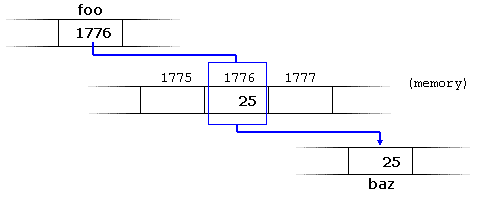
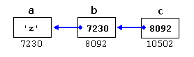

Pointers
For a C++ program, the memory of a computer is like a succession of memory cells, each one byte in size, and each with a unique address. These single-byte memory cells are ordered in a way that allows data representations larger than one byte to occupy memory cells that have consecutive addresses.
This way, each cell can be easily located in the memory by means of its unique address. For example, the memory cell with the address
1776 always follows immediately after the cell with address 1775 and precedes the one with 1777, and is exactly one thousand cells after 776 and exactly one thousand cells before 2776.When a variable is declared, the memory needed to store its value is assigned a specific location in memory (its memory address). Generally, C++ programs do not actively decide the exact memory addresses where its variables are stored. Fortunately, that task is left to the environment where the program is run - generally, an operating system that decides the particular memory locations on runtime. However, it may be useful for a program to be able to obtain the address of a variable during runtime in order to access data cells that are at a certain position relative to it.
Address-of operator (&)
The address of a variable can be obtained by preceding the name of a variable with an ampersand sign (&), known as address-of operator. For example: |
|
This would assign the address of variable
myvar to foo; by preceding the name of the variable myvar with the address-of operator (&), we are no longer assigning the content of the variable itself to foo, but its address.The actual address of a variable in memory cannot be known before runtime, but let's assume, in order to help clarify some concepts, that
myvar is placed during runtime in the memory address 1776.In this case, consider the following code fragment:
|
|
The values contained in each variable after the execution of this are shown in the following diagram:

First, we have assigned the value
25 to myvar (a variable whose address in memory we assumed to be 1776).The second statement assigns
foo the address of myvar, which we have assumed to be 1776.Finally, the third statement, assigns the value contained in
myvar to bar. This is a standard assignment operation, as already done many times in earlier chapters.The main difference between the second and third statements is the appearance of the address-of operator (
&).The variable that stores the address of another variable (like
foo in the previous example) is what in C++ is called a pointer. Pointers are a very powerful feature of the language that has many uses in lower level programming. A bit later, we will see how to declare and use pointers.Dereference operator (*)
As just seen, a variable which stores the address of another variable is called a pointer. Pointers are said to "point to" the variable whose address they store.An interesting property of pointers is that they can be used to access the variable they point to directly. This is done by preceding the pointer name with the dereference operator (
*). The operator itself can be read as "value pointed to by".Therefore, following with the values of the previous example, the following statement:
|
|
This could be read as: "
baz equal to value pointed to by foo", and the statement would actually assign the value 25 to baz, since foo is 1776, and the value pointed to by 1776 (following the example above) would be 25.
It is important to clearly differentiate that
foo refers to the value 1776, while *foo (with an asterisk * preceding the identifier) refers to the value stored at address 1776, which in this case is 25. Notice the difference of including or not including the dereference operator (I have added an explanatory comment of how each of these two expressions could be read): |
|
The reference and dereference operators are thus complementary:
&is the address-of operator, and can be read simply as "address of"*is the dereference operator, and can be read as "value pointed to by"
Thus, they have sort of opposite meanings: An address obtained with
& can be dereferenced with *.Earlier, we performed the following two assignment operations:
|
|
Right after these two statements, all of the following expressions would give true as result:
|
|
The first expression is quite clear, considering that the assignment operation performed on
myvar was myvar=25. The second one uses the address-of operator (&), which returns the address of myvar, which we assumed it to have a value of 1776. The third one is somewhat obvious, since the second expression was true and the assignment operation performed on foo was foo=&myvar. The fourth expression uses the dereference operator (*) that can be read as "value pointed to by", and the value pointed to by foo is indeed 25.So, after all that, you may also infer that for as long as the address pointed to by
foo remains unchanged, the following expression will also be true: |
|
Declaring pointers
Due to the ability of a pointer to directly refer to the value that it points to, a pointer has different properties when it points to achar than when it points to an int or a float. Once dereferenced, the type needs to be known. And for that, the declaration of a pointer needs to include the data type the pointer is going to point to.The declaration of pointers follows this syntax:
type * name; where
type is the data type pointed to by the pointer. This type is not the type of the pointer itself, but the type of the data the pointer points to. For example: |
|
These are three declarations of pointers. Each one is intended to point to a different data type, but, in fact, all of them are pointers and all of them are likely going to occupy the same amount of space in memory (the size in memory of a pointer depends on the platform where the program runs). Nevertheless, the data to which they point to do not occupy the same amount of space nor are of the same type: the first one points to an
int, the second one to a char, and the last one to a double. Therefore, although these three example variables are all of them pointers, they actually have different types: int*, char*, and double* respectively, depending on the type they point to.Note that the asterisk (
*) used when declaring a pointer only means that it is a pointer (it is part of its type compound specifier), and should not be confused with the dereference operator seen a bit earlier, but which is also written with an asterisk (*). They are simply two different things represented with the same sign.Let's see an example on pointers:
|
|
firstvalue is 10 secondvalue is 20 |
Notice that even though neither
firstvalue nor secondvalue are directly set any value in the program, both end up with a value set indirectly through the use of mypointer. This is how it happens:First,
mypointer is assigned the address of firstvalue using the address-of operator (&). Then, the value pointed to by mypointer is assigned a value of 10. Because, at this moment, mypointer is pointing to the memory location of firstvalue, this in fact modifies the value of firstvalue.In order to demonstrate that a pointer may point to different variables during its lifetime in a program, the example repeats the process with
secondvalue and that same pointer, mypointer.Here is an example a little bit more elaborated:
|
|
firstvalue is 10 secondvalue is 20 |
Each assignment operation includes a comment on how each line could be read: i.e., replacing ampersands (
&) by "address of", and asterisks (*) by "value pointed to by".Notice that there are expressions with pointers
p1 and p2, both with and without the dereference operator (*). The meaning of an expression using the dereference operator (*) is very different from one that does not. When this operator precedes the pointer name, the expression refers to the value being pointed, while when a pointer name appears without this operator, it refers to the value of the pointer itself (i.e., the address of what the pointer is pointing to).Another thing that may call your attention is the line:
|
|
This declares the two pointers used in the previous example. But notice that there is an asterisk (
*) for each pointer, in order for both to have type int* (pointer to int). This is required due to the precedence rules. Note that if, instead, the code was: |
|
p1 would indeed be of type int*, but p2 would be of type int. Spaces do not matter at all for this purpose. But anyway, simply remembering to put one asterisk per pointer is enough for most pointer users interested in declaring multiple pointers per statement. Or even better: use a different statement for each variable.Pointers and arrays
The concept of arrays is related to that of pointers. In fact, arrays work very much like pointers to their first elements, and, actually, an array can always be implicitly converted to the pointer of the proper type. For example, consider these two declarations: |
|
The following assignment operation would be valid:
|
|
After that,
mypointer and myarray would be equivalent and would have very similar properties. The main difference being that mypointer can be assigned a different address, whereas myarray can never be assigned anything, and will always represent the same block of 20 elements of type int. Therefore, the following assignment would not be valid: |
|
Let's see an example that mixes arrays and pointers:
|
|
10, 20, 30, 40, 50, |
Pointers and arrays support the same set of operations, with the same meaning for both. The main difference being that pointers can be assigned new addresses, while arrays cannot.
In the chapter about arrays, brackets (
[]) were explained as specifying the index of an element of the array. Well, in fact these brackets are a dereferencing operator known as offset operator. They dereference the variable they follow just as * does, but they also add the number between brackets to the address being dereferenced. For example: |
|
These two expressions are equivalent and valid, not only if
a is a pointer, but also if a is an array. Remember that if an array, its name can be used just like a pointer to its first element.Pointer initialization
Pointers can be initialized to point to specific locations at the very moment they are defined: |
|
The resulting state of variables after this code is the same as after:
|
|
When pointers are initialized, what is initialized is the address they point to (i.e.,
myptr), never the value being pointed (i.e., *myptr). Therefore, the code above shall not be confused with: |
|
Which anyway would not make much sense (and is not valid code).
The asterisk (
*) in the pointer declaration (line 2) only indicates that it is a pointer, it is not the dereference operator (as in line 3). Both things just happen to use the same sign: *. As always, spaces are not relevant, and never change the meaning of an expression.Pointers can be initialized either to the address of a variable (such as in the case above), or to the value of another pointer (or array):
|
|
Pointer arithmetics
To conduct arithmetical operations on pointers is a little different than to conduct them on regular integer types. To begin with, only addition and subtraction operations are allowed; the others make no sense in the world of pointers. But both addition and subtraction have a slightly different behavior with pointers, according to the size of the data type to which they point.When fundamental data types were introduced, we saw that types have different sizes. For example:
char always has a size of 1 byte, short is generally larger than that, and int and long are even larger; the exact size of these being dependent on the system. For example, let's imagine that in a given system, char takes 1 byte, short takes 2 bytes, and long takes 4.Suppose now that we define three pointers in this compiler:
|
|
and that we know that they point to the memory locations
1000, 2000, and 3000, respectively. Therefore, if we write:
|
|
mychar, as one would expect, would contain the value 1001. But not so obviously, myshort would contain the value 2002, and mylong would contain 3004, even though they have each been incremented only once. The reason is that, when adding one to a pointer, the pointer is made to point to the following element of the same type, and, therefore, the size in bytes of the type it points to is added to the pointer.
This is applicable both when adding and subtracting any number to a pointer. It would happen exactly the same if we wrote:
|
|
Regarding the increment (
++) and decrement (--) operators, they both can be used as either prefix or suffix of an expression, with a slight difference in behavior: as a prefix, the increment happens before the expression is evaluated, and as a suffix, the increment happens after the expression is evaluated. This also applies to expressions incrementing and decrementing pointers, which can become part of more complicated expressions that also include dereference operators (*). Remembering operator precedence rules, we can recall that postfix operators, such as increment and decrement, have higher precedence than prefix operators, such as the dereference operator (*). Therefore, the following expression: |
|
is equivalent to
*(p++). And what it does is to increase the value of p (so it now points to the next element), but because ++ is used as postfix, the whole expression is evaluated as the value pointed originally by the pointer (the address it pointed to before being incremented).Essentially, these are the four possible combinations of the dereference operator with both the prefix and suffix versions of the increment operator (the same being applicable also to the decrement operator):
|
|
A typical -but not so simple- statement involving these operators is:
|
|
Because
++ has a higher precedence than *, both p and q are incremented, but because both increment operators (++) are used as postfix and not prefix, the value assigned to *p is *q before both p and q are incremented. And then both are incremented. It would be roughly equivalent to: |
|
Like always, parentheses reduce confusion by adding legibility to expressions.
Pointers and const
Pointers can be used to access a variable by its address, and this access may include modifying the value pointed. But it is also possible to declare pointers that can access the pointed value to read it, but not to modify it. For this, it is enough with qualifying the type pointed to by the pointer asconst. For example: |
|
Here
p points to a variable, but points to it in a const-qualified manner, meaning that it can read the value pointed, but it cannot modify it. Note also, that the expression &y is of type int*, but this is assigned to a pointer of type const int*. This is allowed: a pointer to non-const can be implicitly converted to a pointer to const. But not the other way around! As a safety feature, pointers to const are not implicitly convertible to pointers to non-const.One of the use cases of pointers to
const elements is as function parameters: a function that takes a pointer to non-const as parameter can modify the value passed as argument, while a function that takes a pointer to const as parameter cannot. |
|
11 21 31 |
Note that
print_all uses pointers that point to constant elements. These pointers point to constant content they cannot modify, but they are not constant themselves: i.e., the pointers can still be incremented or assigned different addresses, although they cannot modify the content they point to.And this is where a second dimension to constness is added to pointers: Pointers can also be themselves const. And this is specified by appending const to the pointed type (after the asterisk):
|
|
The syntax with
const and pointers is definitely tricky, and recognizing the cases that best suit each use tends to require some experience. In any case, it is important to get constness with pointers (and references) right sooner rather than later, but you should not worry too much about grasping everything if this is the first time you are exposed to the mix of const and pointers. More use cases will show up in coming chapters.To add a little bit more confusion to the syntax of
const with pointers, the const qualifier can either precede or follow the pointed type, with the exact same meaning: |
|
As with the spaces surrounding the asterisk, the order of const in this case is simply a matter of style. This chapter uses a prefix
const, as for historical reasons this seems to be more extended, but both are exactly equivalent. The merits of each style are still intensely debated on the internet.Pointers and string literals
As pointed earlier, string literals are arrays containing null-terminated character sequences. In earlier sections, string literals have been used to be directly inserted intocout, to initialize strings and to initialize arrays of characters.But they can also be accessed directly. String literals are arrays of the proper array type to contain all its characters plus the terminating null-character, with each of the elements being of type
const char (as literals, they can never be modified). For example: |
|
This declares an array with the literal representation for
"hello", and then a pointer to its first element is assigned to foo. If we imagine that "hello" is stored at the memory locations that start at address 1702, we can represent the previous declaration as:
Note that here
foo is a pointer and contains the value 1702, and not 'h', nor "hello", although 1702 indeed is the address of both of these.The pointer
foo points to a sequence of characters. And because pointers and arrays behave essentially in the same way in expressions, foo can be used to access the characters in the same way arrays of null-terminated character sequences are. For example: |
|
Both expressions have a value of
'o' (the fifth element of the array).Pointers to pointers
C++ allows the use of pointers that point to pointers, that these, in its turn, point to data (or even to other pointers). The syntax simply requires an asterisk (*) for each level of indirection in the declaration of the pointer: |
|
This, assuming the randomly chosen memory locations for each variable of
7230, 8092, and 10502, could be represented as:
With the value of each variable represented inside its corresponding cell, and their respective addresses in memory represented by the value under them.
The new thing in this example is variable
c, which is a pointer to a pointer, and can be used in three different levels of indirection, each one of them would correspond to a different value:cis of typechar**and a value of8092*cis of typechar*and a value of7230**cis of typecharand a value of'z'
void pointers
Thevoid type of pointer is a special type of pointer. In C++, void represents the absence of type. Therefore, void pointers are pointers that point to a value that has no type (and thus also an undetermined length and undetermined dereferencing properties).This gives
void pointers a great flexibility, by being able to point to any data type, from an integer value or a float to a string of characters. In exchange, they have a great limitation: the data pointed to by them cannot be directly dereferenced (which is logical, since we have no type to dereference to), and for that reason, any address in a void pointer needs to be transformed into some other pointer type that points to a concrete data type before being dereferenced.One of its possible uses may be to pass generic parameters to a function. For example:
|
|
y, 1603 |
sizeof is an operator integrated in the C++ language that returns the size in bytes of its argument. For non-dynamic data types, this value is a constant. Therefore, for example, sizeof(char) is 1, because char has always a size of one byte. Invalid pointers and null pointers
In principle, pointers are meant to point to valid addresses, such as the address of a variable or the address of an element in an array. But pointers can actually point to any address, including addresses that do not refer to any valid element. Typical examples of this are uninitialized pointers and pointers to nonexistent elements of an array: |
|
Neither
p nor q point to addresses known to contain a value, but none of the above statements causes an error. In C++, pointers are allowed to take any address value, no matter whether there actually is something at that address or not. What can cause an error is to dereference such a pointer (i.e., actually accessing the value they point to). Accessing such a pointer causes undefined behavior, ranging from an error during runtime to accessing some random value.But, sometimes, a pointer really needs to explicitly point to nowhere, and not just an invalid address. For such cases, there exists a special value that any pointer type can take: the null pointer value. This value can be expressed in C++ in two ways: either with an integer value of zero, or with the
nullptr keyword: |
|
Here, both
p and q are null pointers, meaning that they explicitly point to nowhere, and they both actually compare equal: all null pointers compare equal to other null pointers. It is also quite usual to see the defined constant NULL be used in older code to refer to the null pointer value: |
|
NULL is defined in several headers of the standard library, and is defined as an alias of some null pointer constant value (such as 0 or nullptr).Do not confuse null pointers with
void pointers! A null pointer is a value that any pointer can take to represent that it is pointing to "nowhere", while a void pointer is a type of pointer that can point to somewhere without a specific type. One refers to the value stored in the pointer, and the other to the type of data it points to.Pointers to functions
C++ allows operations with pointers to functions. The typical use of this is for passing a function as an argument to another function. Pointers to functions are declared with the same syntax as a regular function declaration, except that the name of the function is enclosed between parentheses () and an asterisk (*) is inserted before the name: |
|
8 |
In the example above,
minus is a pointer to a function that has two parameters of type int. It is directly initialized to point to the function subtraction: |
|
Character sequences | Index | Dynamic memory |